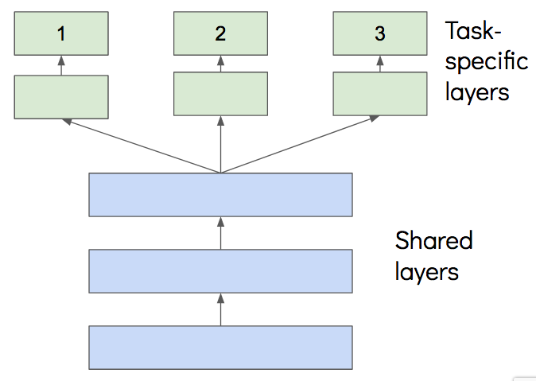
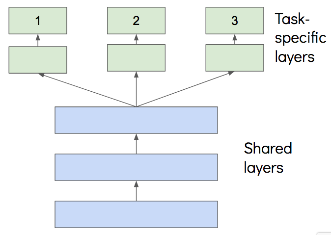

Previously impairment losses on financial assets were only recognized to the extent that there was an objective evidence of impairment, meaning a loss event needed to occur before an impairment loss could be booked+. The new accounting rules for financial instruments require banks to build provisions for expected losses in their loan portfolio. The loss allowance has to be recognized before the actual credit loss is incurred. It is a more forward-looking approach than its predecessor with the aim to result in a more timely recognition of credit losses.
To implement the new accounting rules banks need to build models that can evaluate a borrower’s risk as accurately as possible. A key credit risk parameter is the probability of default. Classification techniques such as logistic regression and decision trees can be used in order to classify the risky from the non-risky loans. These classification techniques however do not take the timing of default into account. With the use of survival analysis more accurate credit risks calculations are enabled since these analysis refers to a set of statistical techniques that is able to estimate the time it takes for a customer to default.
Review of Survival Analysis
Survival analysis is a collection of data analysis methods with the outcome variable of interest time to event. In general event describes the event of interest, also called death event, time refers to the point of time of first observation, also called birth event, and time to event is the duration between the first observation and the time the event occurs. The subjects whose data were collected for survival analysis usually do not have the same time of first observation. A subject can enter the study at any time. Using durations ensure a necessary relativeness. Referring to the business case the birth event is the initial recognition of a loan, the death event, consequently the event of interest, describes the time a customer defaulted and the duration is the time between the initial recognition and the event of default.
Apparently not every observation will experience an endpoint. This type of data missing can be emerged due to two reasons:
The subject is still part of the study but has not experienced the event of interest yet.
The subject experienced a different event and led to the end of the study.
Survival Function
The survival function $ S(t) = Pr(T>t)$ describes the probability that a subject of interest will survive beyond time \(t\), it is a non-increasing function of \(t\). Theoretically, survival function is smooth but in practice data is usually observed across a fine grid.(e.g. Kaplan-Meier Curves)
Hazard Function
Derived from the survival function the hazard function \(h(t)\) gives the probability of the death event occurring at time \(t\).
\[h(t) = \displaystyle{\lim_{\delta t \to 0} \frac{Pr(t \leq T \leq t+ \delta t | T \gt t)}{\delta t}}\]
Its relationship with Survival function is \(h(t) = \frac{f_{T}(t)}{S(t)}\)
Standard methods in Survival Analysis
Parametric methods rely on the assumptions that the distribution of the survival times corresponds to specific probability distributions. This group consists of methods such as exponential, Weibull and lognormal distributions. Parameters inside these models are usually estimated using certain maximum likelihood estimations.
In the non-parametric methods there are no dependencies on the form of parameters in underlying distributions. Mostly, the non-parametric approach is used to describe survival probabilities as function of time and to give an average view of individual’s population. The most popular univariate method is the Kaplan-Meier estimator and used as first step in survival descriptive analysis
To the semi-parametric methods corresponds the Cox regression model which is based both on parametric and non-parametric components
{kind=link}
Kaplan-Meier estimator
\[ \hat{S(t)} = \displaystyle{\prod_{i:t_{i}\leq t}}\frac{n_i - d_i}{n_i}\]
Where \(n_i\) is the number of subjects at risk(remaining) at \(t_i\) and \(d_i\) is the number of subjects that experienced the event at time \(t_i\)
Attributes:
- All obeservations are used for estimation
- Survival probability is equal to all subjects
- Can not consider covariates effect in the dataset
Cox Proportional Hazard Models
\[\lambda(t|X) = \lambda_{0}(t)exp(\beta_1x_1 + ... + \beta_nx_n)\]
Where \(\lambda_{0}(t)\) is the baseline hazard function when all the other covariates are zeros.
Attributes:
- This method is considered as semi-parametric: The set of parametric covariates and a non-parametric component \(\lambda_0(t)\), which is the baseline hazard.
- The second component are partial hazards or hazard ratio and they define the hazard effect of observed covariates on the baseline hazard ratio.
- These components are estimated by partial likelihood and are time-invariant
Time Varing Covariates
Avoid the proportional hazard assumption.
Its effect does not depend on time. Time-variant features should be used when it is hypothesized that the predicted hazard depends significantly on later values of the covariate than the value of the covariate at the baseline.
Challenges with time-varying covariates are missing data in the covariate at different timestamps.
Random Survival Forest
Basically, RSF computes a random forest using the log-rank test as the splitting criterion. It calculates the cumulative hazards of the leaf nodes in each tree and averages them in following ensemble.
The tree is grown to full size under the condition that each terminal node have no less than a pre-specified number of deaths
The out-of-bag samples are then used to compute the prediction error of the ensemble cumulative hazard function.
Deep Learning For Survival Analysis
Provide more individual learning inside and flexible model architectures.
Some categories:
- Further developmenmt of Cox proportional hazards model: DeepSurv, Cox-nnet
- Fully parametric, use RNN to predict the time of the next event: RNN-SURV, Weilbull Time-To-event RNN
- Allow competing risks: DeepHit
- Some additional literatures to read
DeepSurv
DeepSurv has an advantage over traditional Cox regression because it does not require an a priori selection of covariates, but learns them adaptively.
{kind=link}
In Cox regression model, we optimize through partial likelihood function with censored data:
\[ L(\beta) = \displaystyle{\prod_{j=1}^{n}}[\frac{exp(\beta{X_i})}{\sum_{j\in R(X_i)}exp(\beta{X_l})}]^{\delta_i}\]
In DeepSurv the loss function is the negative log partial likelihood with an additional regularization.
The output of the network is a single node, which estimates the risk function \(\hat{h_\theta(x)}\) parameterized by the weights of the network θ
\[ l(\theta) = - \frac{1}{n} \sum_{j=1}^{n} \delta_i(\theta{X_i} - log\sum_{j\in R(X_i)}exp(\theta{X_l})) + \lambda||\theta||_2^2 \]
Implementation:
DeepHit
DeepHit is a deep neural network that learns the distribution of survival times directly. This means that this model does not do any assumptions about an underlying stochastic process, so both the parameters of the model as well as the form of the stochastic process depends on the covariates of the specific dataset used for survival analysis.
This architecture contains two sub-networks: A shared sub-network and a cause-specific sub-network, which allow us to implement competing risks easily.
Also this architecture provides multi-tasking, which applies the knowledge learned from previous tasks to help learn a new task. Different from transfer learning, the goal is to improve all the tasks equally.
 DeepHit provides an architecture of hard parameter sharing. 
DeepHit provides an architecture of hard parameter sharing. 
{kind=link}
By multi-task learning, it advances the performances due to several reasons:
Increase sample size, like data augmentation.
The network sees more labels, not for the same tasks but highly related.
The model learns more general representations as in the transfer learning.
Focus on important information rather than task-specific noise
Combined easy and hard tasks
Treat each other as a form of regularization to prevent overfitting
{kind=link}
Major difference with typical multi-task learning architecture:
Original covariates has a residual connection with the input of the cause-specific network
A single output layer to learn the joint distribution of the competing events.
i.e. \(y = [y_{1,1},...,y_{1,Tmax},..., y_{k,1},...,y_{k,Tmax}]\)
Hyperparamters of DeepHit:
batch size
number of layers in the shared sub-network
number of nodes in the shared sub-network
number of layers in the cause-specific sub-network
number of nodes in the cause-specific sub-network
learning rate
dropout
activation functions
The loss function of the DeepHit model is the sum of two terms. \[L = L_1 + L_2\]
\(L1\) is the log-likelihood of the joint distribution of the first hitting time and event.
The log-likelihood function also consists out of two terms. The first term captures the event and the time, the event occurred, for the uncensored customers. The second term captures the time of censoring for the censored customers giving the information that the customer did not default up to that time.
{kind=link}
\(L2\) is a combination of cause-specific ranking loss functions since DeepHit is a multi-task learning model and therefore needs cause-specific loss functions for training. The ranking loss function incorporates the estimated cumulative incidence function calculated at the time the specific event occurred.
{kind=link}
{kind=link}
{kind=link}
The cause-specific ranking loss function adapts the idea of concordance. A customer that experienced the event k on a specific time t should have a higher probability than a customer that will experience the event sometime after this specific time t. The ranking loss function therefore compares pairs of customers that experienced the same event of interest and penalizes an incorrect ordering of pairs.
Evaluation
- concordance-index (c-index)
The idea behind concordance is that a subject that dies at time t should have a higher risk at time t than a subject who survives beyond time t. The same ordering as the observed data will give a c-index of 1. Only order but not the actual time is accounted for.
In the case of right-censoring, only compare informed pairs
{kind=link}
For example in this case , we will only calculate (A,B), (A,C), (A,D), (C,D), because no information of B is given it is censored.
Possible Extend
Built a survival prediction model that can predict survival probability on the continumm of time.
Predict a patient's risk of developing toxicity for drug usage.